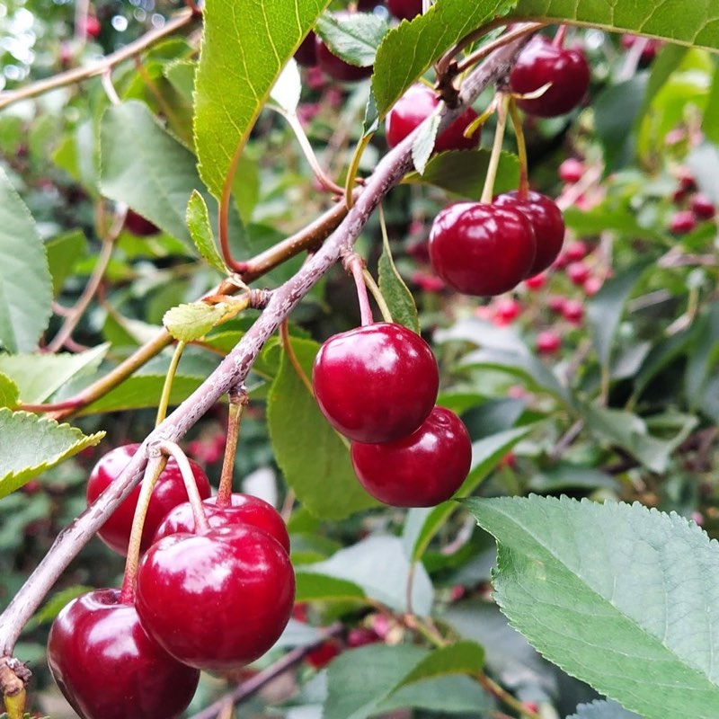
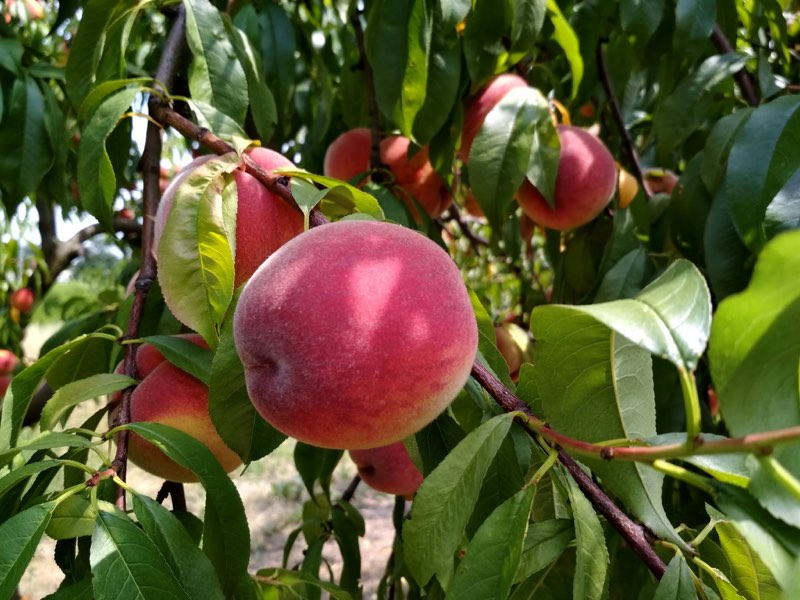
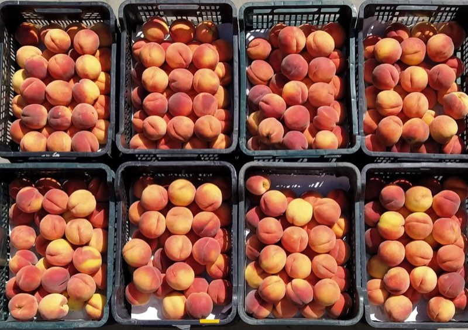
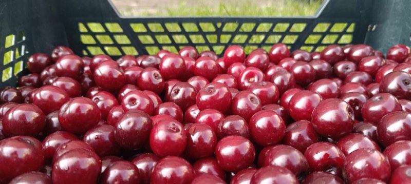

Czerwiec — lipiec
Wiśnie
Trzy odmiany — Nefris, Panda i Łutówka — dojrzewające jedna po drugiej. Kwaśne, aromatyczne, z gęstym ciemnym sokiem. To z nich wychodzą najlepsze konfitury, nalewki i ciasta.

Rodzinny sad Ani i Pawła. Zrywamy rano, sprzedajemy po południu — tego samego dnia. Osiem odmian dojrzewa jedna po drugiej, więc sezon trwa całe lato, a nie dwa tygodnie.
Otwarte niedziela–piątek, 16:00–19:00
W soboty sad jest nieczynny.
W soboty nieczynne
62-001 Golęczewo, gmina Suchy Las
Odmiany schodzą z drzew po kolei — poniżej kalendarz całego sezonu.
Terminy zależą od pogody — w chłodniejsze lata wszystko przesuwa się nawet o dwa tygodnie. Aktualny stan zawsze podajemy telefonicznie i na Facebooku.
Sezon w sadzie trwa krótko i nie da się go przyspieszyć. Sadzimy kilka odmian każdego gatunku właśnie po to, żeby nie skończył się po dwóch tygodniach.

Trzy odmiany — Nefris, Panda i Łutówka — dojrzewające jedna po drugiej. Kwaśne, aromatyczne, z gęstym ciemnym sokiem. To z nich wychodzą najlepsze konfitury, nalewki i ciasta.

Pięć odmian, od wczesnego Harnasia po późny Flaming. Miękkie, słodkie, o intensywnym zapachu — zrywane dojrzałe, nie „na zapas”, dlatego smakują inaczej niż te z półki.
Cena za kilogram zmienia się w trakcie sezonu — zależy od odmiany i od tego, ile akurat zeszło z drzew. Zadzwoń, podamy aktualną. Przy większych ilościach na przetwory ustalamy cenę indywidualnie.
Większość owoców, które od nas wyjeżdża, trafia do słoików i zamrażarek. Dlatego podpowiadamy, po którą odmianę sięgnąć — i ile mniej więcej kilogramów zamówić.
Im kwaśniejsza wiśnia, tym wyraźniejszy smak po zasmażeniu. Orientacyjnie 3 kg owoców to około sześciu słoiczków po 0,4 l.
Najciemniejszy sok i najgłębszy kolor ze wszystkich naszych wiśni. Na klasyczną nalewkę bierze się zwykle kilogram owoców na litr alkoholu.
Zwarty miąższ nie rozpada się po rozmrożeniu, a owoce łatwo się drylują. Najlepszy wybór, jeśli robisz zapas na ciasta przez cały rok.
Miąższ dobrze odchodzi od pestki, więc połówki wychodzą równe. Owoce zbieramy dojrzałe, ale jędrne — takie, które trzymają kształt w słoiku.
Duże, mięsiste owoce, które nie puszczają zbyt dużo soku w cieście. Royal to też ta brzoskwinia, którą najczęściej zjada się w drodze do auta.
Skrzynki na przetwory, do cukierni czy na wesele najlepiej zamawiać z wyprzedzeniem — zadzwoń, ustalimy termin i ilość.
Każda dojrzewa w swoim czasie — dlatego sezon rozciąga się na całe lato. Rozwiń listę, żeby zobaczyć kolejność, w jakiej pojawiają się u nas na drzewach.
Otwiera sezon wiśniowy. Ciemne, soczyste owoce o wyraźnej kwasowości — takie, po których od razu wiadomo, że to wiśnia, a nie czereśnia.
Pierwsza w sadzieDuże, ciemnobordowe owoce o zwartym miąższu. Łatwo się zrywa i dobrze znosi drogę — nasz pierwszy wybór na mrożenie i przetwory.
Środek sezonuKlasyk polskich sadów i najpóźniejsza z naszych wiśni. Mocno kwaśna, o gęstym, ciemnym soku — to z niej wychodzą najlepsze konfitury i nalewki.
Zamyka sezon wiśniowyPolska, wczesna odmiana, od której zaczynają się u nas brzoskwinie. Owoce średniej wielkości, soczyste, z mocnym rumieńcem.
Pierwsza w sadzieNajbardziej znana brzoskwinia świata i nie bez powodu. Żółty miąższ dobrze odchodzący od pestki, smak słodko-kwaskowy — uniwersalna.
Wczesny środek sezonuDuże owoce z rumieńcem na niemal całej skórce. Jędrny, słodki miąższ — brzoskwinia, którą najczęściej zjada się od razu w drodze do auta.
Pełnia sezonuPolska odmiana o żółtym, aromatycznym miąższu i wyraźnie słodkim smaku. Bardzo dobra zarówno na deser, jak i do słoika.
Późna pełnia sezonuNasza najpóźniejsza brzoskwinia, która zamyka cały sadowy sezon. Dorodne owoce o intensywnym wybarwieniu i pełnym, słodkim smaku.
Zamyka sezon
Zrywamy rano. Sprzedajemy po południu. Tego samego dnia.
Zdjęcia z naszego sadu i z dni, w których owoce schodzą z drzew.
Nazywamy się Ania i Paweł Śpitalniak. Nasz sad leży w Golęczewie, na skraju gminy Suchy Las, tuż przy wiatraku, od którego wzięła się nazwa. Nie wysyłamy owoców w Polskę i nie trzymamy ich tygodniami w chłodni — to, co zrywamy rano, tego samego dnia trafia do koszyka naszych sąsiadów i mieszkańców Poznania.
— Ania i Paweł
W sezonie od niedzieli do piątku, w godzinach 16:00–19:00. W soboty sad jest nieczynny — to jedyny dzień, w którym nie warto przyjeżdżać.
Nie trzeba, ale warto. Odmiany schodzą z drzew po kolei i zdarza się, że akurat kończy się jedna, a druga jeszcze nie dojrzała. Jeden telefon oszczędza całą drogę.
Wiśnie zwykle w czerwcu i lipcu, brzoskwinie od lipca do września. Terminy zależą od pogody i w chłodniejsze lata przesuwają się nawet o dwa tygodnie — dlatego kalendarz na tej stronie jest orientacyjny.
Tak. Skrzynki na przetwory, do cukierni czy na wesele najlepiej zamawiać z wyprzedzeniem — zadzwoń pod 500 326 588, ustalimy termin, odmianę i ilość.
Z centrum Poznania około 15 minut, z Suchego Lasu i Rokietnicy jeszcze bliżej, z Obornik około 20 minut. Adres to ul. Tysiąclecia 25 w Golęczewie — wpisz go w nawigację, dojazd jest prosty.
Najświeższe wieści — która odmiana właśnie dojrzała, kiedy zaczynamy zbiory — publikujemy na naszym Facebooku. Obserwuje nas tam już ponad 1,7 tysiąca osób.
Najprościej zadzwonić — odbieramy między pracą w sadzie, więc jeśli nie odbierzemy od razu, oddzwonimy.